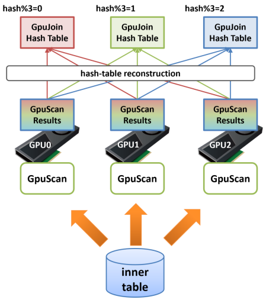
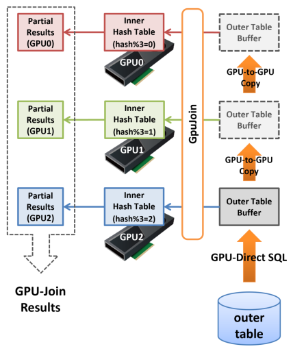

PG-Strom v6.0 Release
Overview
Major changes in PG-Strom v6.0 are as follows:
- GPU-Sort and a few Window-functions
- Partitioned Pinned Inner Buffer
- Arrow_Fdw Virtual Columns
- AVG(numeric), SUM(numeric) accuracy improvement
- GpuPreAgg final merge on GPU device
- Improved GPU-tasks scheduling
- Cumulative bug fixes
Prerequisites
- PostgreSQL v15 or later
- CUDA Toolkit 12.2 or later
- Linux distributions supported by CUDA Toolkit
- Intel x86 64bit architecture (x86_64)
- NVIDIA GPU CC 6.0 or later (Pascal at least; Turing or newer is recommended)
GPU-Sort and a few Window-functions
PG-Strom v6.0 now supports GPU-Sort.
Sorting is a typical workload suited to GPUs, and we had tried to implement it in the early version of PG-Strom.
However, the RAM of early stage GPUs was small at that time, so sorting data that fits in the GPU's RAM did not improve the speed significantly. In addition, the sorting workload does not reduce the amount of data, so CPU processing tends to get stucked after receiving the data from the GPU. Therefore, we decided not to implement it at that time.
However, as of 2025, the memory of high-end GPUs has reached tens of GB, and it has become clear that combining sorting with LIMIT clauses and window functions is effective for many workloads.
Due to the nature of sorting, all target data must be stored in GPU memory.
On the other hand, various GPU-operators in PG-Strom have a mechanism called CPU-Fallback, which re-executes the processing of operators or SQL functions on the CPU when they cannot be completed on the GPU. A typical example is when variable-length data does not fit into the PostgreSQL block size (8kB) and is stored in an external TOAST table. CPU-Fallback is a function to ensure continuity of processing even for extremely exceptional data, but rows that are subject to CPU-Fallback are stored in the CPU and do not exist in GPU memory, which causes an obstacle when sorting.
Therefore, the GPU-Sort function works only when the CPU-Fallback function is disabled, i.e., when pg_strom.cpu_fallback=off is set.

When CPU-Fallback is disabled, the complete result-set of GPU-Scan/Join/PreAgg should be in GPU memory, so PG-Strom can perform parallel sorting based on the Bitonic-Sorting algorithm and return the sorted results to the CPU.
When used with a LIMIT clause or a window function that limits the number of rows, such as rank() < 4, it will reduce the number of data returned to the CPU based on these optimization hints. This should contribute to speedup by reducing the number of data to be processed by the CPU.
Please see the execution plan below. This is the result of narrowing down the number of rows using a window function (rank() < 4) without enabling GPU-Sort.
=# explain analyze
select * from (
select c_region, c_nation, c_city, lo_orderdate, sum(lo_revenue) lo_rev,
rank() over(partition by c_region, c_nation, c_city
order by sum(lo_revenue)) cnt
from lineorder, customer
where lo_custkey = c_custkey
and lo_shipmode in ('RAIL','SHIP')
group by c_region, c_nation, c_city, lo_orderdate
) subqry
where cnt < 4;
QUERY PLAN
--------------------------------------------------------------------------------------------------------------------------------------------------------------------
WindowAgg (cost=32013352.01..33893039.51 rows=75187500 width=84) (actual time=13158.987..13335.106 rows=750 loops=1)
Run Condition: (rank() OVER (?) < 4)
-> Sort (cost=32013352.01..32201320.76 rows=75187500 width=76) (actual time=13158.976..13238.136 rows=601500 loops=1)
Sort Key: customer.c_region, customer.c_nation, customer.c_city, (pgstrom.sum_numeric((pgstrom.psum(lineorder.lo_revenue))))
Sort Method: quicksort Memory: 76268kB
-> HashAggregate (cost=15987574.35..18836475.71 rows=75187500 width=76) (actual time=9990.801..10271.543 rows=601500 loops=1)
Group Key: customer.c_region, customer.c_nation, customer.c_city, lineorder.lo_orderdate
Planned Partitions: 8 Batches: 1 Memory Usage: 516113kB
-> Custom Scan (GpuPreAgg) on lineorder (cost=4967906.38..5907750.13 rows=75187500 width=76) (actual time=9175.476..9352.529 rows=1203000 loops=1)
GPU Projection: pgstrom.psum(lo_revenue), c_region, c_nation, c_city, lo_orderdate
GPU Scan Quals: (lo_shipmode = ANY ('{RAIL,SHIP}'::bpchar[])) [plan: 600046000 -> 171773200, exec: 1311339 -> 362780]
GPU Join Quals [1]: (lo_custkey = c_custkey) [plan: 171773200 -> 171773200, exec: 362780 -> 322560
GPU Outer Hash [1]: lo_custkey
GPU Inner Hash [1]: c_custkey
GPU Group Key: c_region, c_nation, c_city, lo_orderdate
Scan-Engine: GPU-Direct with 2 GPUs <0,1>; direct=11395910, ntuples=1311339
-> Seq Scan on customer (cost=0.00..81963.11 rows=3000011 width=46) (actual time=0.008..519.064 rows=3000000 loops=1)
Planning Time: 1.395 ms
Execution Time: 13494.808 ms
(19 rows)
After GPU-PreAgg, HashAggregate is run to aggregate the partial aggregation results, and Sort is run to sort the aggregated values. Finally, WindowAgg is run to narrow down the results to the top three sum(lo_revenue) for each c_region, c_nation, and c_city.
The processing time for GPU-PreAgg is 9.352 seconds, so we can see that roughly 4 seconds of the latter half of the process was spent on the CPU.
On the other hand, the following execution plan disables CPU-Fallback by setting pg_strom.cpu_fallback=off (i.e. enables GPU-Sort).
=# set pg_strom.cpu_fallback = off;
SET
=# explain analyze
select * from (
select c_region, c_nation, c_city, lo_orderdate, sum(lo_revenue) lo_rev,
rank() over(partition by c_region, c_nation, c_city
order by sum(lo_revenue)) cnt
from lineorder, customer
where lo_custkey = c_custkey
and lo_shipmode in ('RAIL','SHIP')
group by c_region, c_nation, c_city, lo_orderdate
) subqry
where cnt < 4;
QUERY PLAN
--------------------------------------------------------------------------------------------------------------------------------------------------------
WindowAgg (cost=5595978.47..5602228.47 rows=125000 width=84) (actual time=9596.930..9598.194 rows=750 loops=1)
Run Condition: (rank() OVER (?) < 4)
-> Result (cost=5595978.47..5599415.97 rows=125000 width=76) (actual time=9596.918..9597.292 rows=750 loops=1)
-> Custom Scan (GpuPreAgg) on lineorder (cost=5595978.47..5597540.97 rows=125000 width=76) (actual time=9596.912..9597.061 rows=750 loops=1)
GPU Projection: pgstrom.psum(lo_revenue), c_region, c_nation, c_city, lo_orderdate
GPU Scan Quals: (lo_shipmode = ANY ('{RAIL,SHIP}'::bpchar[])) [plan: 600046000 -> 171773200, exec: 1311339 -> 362780]
GPU Join Quals [1]: (lo_custkey = c_custkey) [plan: 171773200 -> 171773200, exec: 362780 -> 322560
GPU Outer Hash [1]: lo_custkey
GPU Inner Hash [1]: c_custkey
GPU Group Key: c_region, c_nation, c_city, lo_orderdate
Scan-Engine: GPU-Direct with 2 GPUs <0,1>; direct=11395910, ntuples=1311339
GPU-Sort keys: c_region, c_nation, c_city, pgstrom.fsum_numeric((pgstrom.psum(lo_revenue)))
Window-Rank Filter: rank() over(PARTITION BY c_region, c_nation, c_city ORDER BY pgstrom.fsum_numeric((pgstrom.psum(lo_revenue)))) < 4
-> Seq Scan on customer (cost=0.00..81963.11 rows=3000011 width=46) (actual time=0.006..475.006 rows=3000000 loops=1)
Planning Time: 0.381 ms
Execution Time: 9710.616 ms
(16 rows)
The HashAggregate and Sort that were in the original query plan have gone, and instead, the lines GPU-Sort keys and Window-Rank Filter have appeared as options for GpuPreAgg.
This indicates that GpuPreAgg creates the complete aggregation on the GPU, then sorts and outputs it.
In addition, in this query, filtering is performed using the window function rank(). By pushing down this condition to the lower node GpuPreAgg, rows that are known to be filtered out in advance are removed from the result set, reducing the amount of data transferred from the GPU to the CPU and the number of rows that the CPU needs to copy. These processes are processed in parallel on the GPU memory, so they are generally faster than CPU processing.
Multi-GPUs Pinned Inner Buffer
PG-Strom v5.2 supported GPU-Join's Pinned Inner Buffer. This feature speeds up the construction of a hash table when GPU-Scan or GPU-Join is connected as an INNER lower plan of GPU-Join, and the processing results can be used as a hash table for GPU-Join, which is one of the parallelized HashJoins. Previously, the processing results of GPU-Scan or GPU-Join were sent back to the CPU to construct a hash table, but now the results are stored in GPU memory and used in the subsequent GPU-Join. This prevents data from moving from GPU to CPU and back again, which improves processing speed, especially when the size of the INNER side is large.

However, in many systems, the capacity of the GPU's RAM is limited compared to the RAM of the server itself, and there are also restrictions on the size of the hash table. This restriction can be alleviated by dividing the hash table into multiple GPUs, but if an INNER row placed on another GPU is referenced while HashJoin is being executed on one GPU, a phenomenon called GPU memory thrashing occurs, resulting in a severe slowdown in speed. Therefore, a mechanism was needed to ensure the locality of memory access while HashJoin is being executed.
In PG-Strom v6.0, the Pinned-Inner-Buffer of GPU-Join supports multiple GPUs.
Please see the following diagram. When scanning the INNER table of GPU-Join is executed on multiple GPUs and the result is stored in the GPU memory to build a hash table, it is completely random which rows are stored on each GPU.
In the next step, Hash-Join, if a row read from the OUTER side is first joined with an INNER row on GPU1, then with an INNER row on GPU2, and finally with an INNER row on GPU0, extreme thrashing will occur, causing a severe performance drop.
Therefore, in PG-Strom v6.0's GPU-Join, when using Pinned-Inner-Buffer on multiple GPUs, a reconstruction process is inserted to reallocate the hash table on the appropriate GPU. For example, in a system equipped with three GPUs, if the size of the hash table fits roughly into the RAM of the three GPUs, after the GPU-Scan of the INNER table is completed, the hash value of the join key to be used in the next GPU-Join is calculated, and if the remainder when dividing this by 3 is 0, it is reallocated to GPU0, if it is 1 then it is reallocated to GPU1, and if it is 2 then it is reallocated to GPU2.
By inserting this process, it is possible to create a state in which when GPU-Join is executed on GPU0, the hash table will only contain INNER rows whose remainder when the hash value is divided by 3 is 0, and similarly, GPU1 will only contain INNER rows whose remainder when the hash value is divided by 3 is 1.

Next, when GPU-Join is executed using this divided hash table, when the GPU that first loaded data from the OUTER table (let's call it GPU2 here) references the hash table, if the remainder when dividing the hash value calculated from the OUTER row by 3 is other than 2, then there will obviously be no matching INNER row on that GPU.
Therefore, GPU2 will generate a join result consisting of only hash values whose remainder when divided by 3 is 2. Next, this OUTER data is transferred to GPU1 by GPU-to-GPU Copy, which generates a join result consisting of only hash values whose remainder when divided by 3 is 1.
By repeating this process, "partial Hash-Join results" are generated on each GPU, but the combination of these is equal to the complete Hash-Join result, and as a result, it is now possible to execute GPU-Join even if the INNER hash table is larger in size than the GPU's on-board RAM.

In relation to this feature, the pg_strom.pinned_inner_buffer_partition_size parameter has been added.
This specifies the threshold size for dividing the Pinned-Inner-Buffer among multiple GPUs. The initial value is set to about 80-90% of the GPU's installed memory, so administrators usually do not need to change this.
Arrow_Fdw Virtual Columns
When backing up data, it is common to set up a naming convention so that part of the file name indicates the attributes of the data.
For example, a file name like my_data_2018_tokyo.arrow might convey that the data stored here is from the Tokyo area in 2018.
In Arrow_Fdw foreign table, you can use dir option to access multiple Apache Arrow files with SQL. If the file name has some meaning, you can use it as a hint to speed up access to Arrow_Fdw foreign table.
Here is an example.
$ ls /opt/arrow/mydata
f_lineorder_1993_AIR.arrow f_lineorder_1994_SHIP.arrow f_lineorder_1996_MAIL.arrow
f_lineorder_1993_FOB.arrow f_lineorder_1994_TRUCK.arrow f_lineorder_1996_RAIL.arrow
f_lineorder_1993_MAIL.arrow f_lineorder_1995_AIR.arrow f_lineorder_1996_SHIP.arrow
f_lineorder_1993_RAIL.arrow f_lineorder_1995_FOB.arrow f_lineorder_1996_TRUCK.arrow
f_lineorder_1993_SHIP.arrow f_lineorder_1995_MAIL.arrow f_lineorder_1997_AIR.arrow
f_lineorder_1993_TRUCK.arrow f_lineorder_1995_RAIL.arrow f_lineorder_1997_FOB.arrow
f_lineorder_1994_AIR.arrow f_lineorder_1995_SHIP.arrow f_lineorder_1997_MAIL.arrow
f_lineorder_1994_FOB.arrow f_lineorder_1995_TRUCK.arrow f_lineorder_1997_RAIL.arrow
f_lineorder_1994_MAIL.arrow f_lineorder_1996_AIR.arrow f_lineorder_1997_SHIP.arrow
f_lineorder_1994_RAIL.arrow f_lineorder_1996_FOB.arrow f_lineorder_1997_TRUCK.arrow
postgres=# IMPORT FOREIGN SCHEMA f_lineorder FROM SERVER arrow_fdw INTO public
OPTIONS (dir '/opt/arrow/mydata', pattern 'f_lineorder__${shipmode}.arrow');
IMPORT FOREIGN SCHEMA
postgres=# \d f_lineorder
Foreign table "public.f_lineorder"
Column | Type | Collation | Nullable | Default | FDW options
--------------------+---------------+-----------+----------+---------+----------------------
lo_orderkey | numeric | | | |
lo_linenumber | integer | | | |
lo_custkey | numeric | | | |
lo_partkey | integer | | | |
lo_suppkey | numeric | | | |
lo_orderdate | integer | | | |
lo_orderpriority | character(15) | | | |
lo_shippriority | character(1) | | | |
lo_quantity | numeric | | | |
lo_extendedprice | numeric | | | |
lo_ordertotalprice | numeric | | | |
lo_discount | numeric | | | |
lo_revenue | numeric | | | |
lo_supplycost | numeric | | | |
lo_tax | numeric | | | |
lo_commit_date | character(8) | | | |
lo_shipmode | character(10) | | | |
year | bigint | | | | (virtual 'year')
shipmode | text | | | | (virtual 'shipmode')
Server: arrow_fdw
FDW options: (dir '/opt/arrow/mydata', pattern 'f_lineorder__${shipmode}.arrow')
In this system, data output from the lineorder table of SSBM (Star Schema Benchmark) is stored in the /opt/arrow/mydata directory by year of lo_ordate and value of lo_shipmode. In other words, the value read from the lo_orderdate field in the f_lineorder_1995_RAIL.arrow file is always contains the value larger than or equal to 19950101 and less than or equal to 19951231.
This gives rise to the idea that by using the "year" value embedded in the file name, it may be possible to skip Apache Arrow files that clearly do not have matching rows, thereby speeding up the response time of queries. This is the virtual column feature of Arrow_Fdw, and in this example, the year column and shipmode column with the column option virtual correspond to the virtual columns.
Although these columns do not actually exist in the Apache Arrow files under the directory /opt/arrow/mydata, @{year} and ${shipmode} act as wildcards in the string specified in the foreign table option pattern. When year and shipmode are specified in the virtual column options, the part of the file name that matches the specified wildcard will behave as if it were the value of that virtual column.
For example, the value of the virtual column year in the row derived from f_lineorder_1995_RAIL.arrow will be 1995, and the value of the virtual column shipmode will be 'RAIL'.
You can take advantage of this property to optimize your queries.
The following example searches for aggregate values on this foreign table by searching data from 1993 and some additional conditions.
Compared to adding the range condition between 19930101 and 19931231 to the value of the column lo_orderdate that physically exists in the Apache Arrow file, the search condition adjusted to compare the virtual columns year and 1993 skips 48 of the total 60 Record-Batches according to Stats-Hint: in the EXPLAIN ANALYZE output, and actually processes only 12 Record-Batches (1/5, but the result is the same).
without virtual-column optimization
=# explain analyze
select sum(lo_extendedprice*lo_discount) as revenue
from f_lineorder
where lo_orderdate between 19930101 and 19931231
and lo_discount between 1 and 3
and lo_quantity < 25;
QUERY PLAN
------------------------------------------------------------------------------------------
Aggregate (cost=463921.94..463921.95 rows=1 width=32) (actual time=175.826..175.828 rows=1 loops=1)
-> Custom Scan (GpuPreAgg) on f_lineorder (cost=463921.92..463921.93 rows=1 width=32) \
(actual time=175.808..175.811 rows=2 loops=1)
GPU Projection: pgstrom.psum((lo_extendedprice * lo_discount))
GPU Scan Quals: ((lo_orderdate >= 19930101) AND (lo_orderdate <= 19931231) AND \
(lo_discount >= '1'::numeric) AND (lo_discount <= '3'::numeric) AND \
(lo_quantity < '25'::numeric)) [plan: 65062080 -> 542, exec: 65062081 -> 1703647]
GPU Group Key:
referenced: lo_orderdate, lo_quantity, lo_extendedprice, lo_discount
file0: /opt/arrow/mydata/f_lineorder_1996_MAIL.arrow (read: 107.83MB, size: 427.16MB)
file1: /opt/arrow/mydata/f_lineorder_1996_SHIP.arrow (read: 107.82MB, size: 427.13MB)
:
file29: /opt/arrow/mydata/f_lineorder_1993_TRUCK.arrow (read: 107.51MB, size: 425.91MB)
GPU-Direct SQL: enabled (N=2,GPU0,1; direct=413081, ntuples=65062081)
Planning Time: 0.769 ms
Execution Time: 176.390 ms
(39 rows)
=# select sum(lo_extendedprice*lo_discount) as revenue
from f_lineorder
where lo_orderdate between 19930101 and 19931231
and lo_discount between 1 and 3
and lo_quantity < 25;
revenue
---------------
6385711057885
(1 row)
with virtual-column optimization
=# explain analyze
select sum(lo_extendedprice*lo_discount) as revenue
from f_lineorder
where year = 1993
and lo_discount between 1 and 3
and lo_quantity < 25;
QUERY PLAN
------------------------------------------------------------------------------------------
Aggregate (cost=421986.99..421987.00 rows=1 width=32) (actual time=54.624..54.625 rows=1 loops=1)
-> Custom Scan (GpuPreAgg) on f_lineorder (cost=421986.97..421986.98 rows=1 width=32) \
(actual time=54.616..54.618 rows=2 loops=1)
GPU Projection: pgstrom.psum((lo_extendedprice * lo_discount))
GPU Scan Quals: ((year = 1993) AND (lo_discount <= '3'::numeric) AND (lo_quantity < '25'::numeric) \
AND (lo_discount >= '1'::numeric)) [plan: 65062080 -> 542, exec:13010375 -> 1703647]
GPU Group Key:
referenced: lo_quantity, lo_extendedprice, lo_discount, year
Stats-Hint: (year = 1993) [loaded: 12, skipped: 48]
file0: /opt/arrow/mydata/f_lineorder_1996_MAIL.arrow (read: 99.53MB, size: 427.16MB)
file1: /opt/arrow/mydata/f_lineorder_1996_SHIP.arrow (read: 99.52MB, size: 427.13MB)
file29: /opt/arrow/mydata/f_lineorder_1993_TRUCK.arrow (read: 99.24MB, size: 425.91MB)
GPU-Direct SQL: enabled (N=2,GPU0,1; direct=76245, ntuples=13010375)
Planning Time: 0.640 ms
Execution Time: 55.078 ms
(40 rows)
=# select sum(lo_extendedprice*lo_discount) as revenue
from f_lineorder
where year = 1993
and lo_discount between 1 and 3
and lo_quantity < 25;
revenue
---------------
6385711057885
(1 row)
AVG(numeric), SUM(numeric) accuracy improvement
Due to limitations on atomic operations on GPUs (floating-point type atomicAdd() only supports up to 64 bits), numeric aggregation has previously been implemented with values tranformed to 64bit floating-point type (float8).
However, in this case, double-precision floating-point data, which has a mantissa of only 53 bits, is added millions of times, posing the issue of severe accumulation of calculation errors. For this reason, we have gone to the trouble of providing an option to prevent numeric aggregation functions from being executed on the GPU. (pg_strom.enable_numeric_aggfuncs option)
In v6.0, the calculation process has been improved to use the 128-bit fixed-point representation, which is the GPU internal implementation of the numeric data type. This does not mean that calculation errors have completely disappeared, but the calculation errors are much milder due to the increased number of digits used to represent real numbers.
### by CPU(PostgreSQL)
postgres=# select count(*), sum(x) from t;
count | sum
----------+-------------------------------
10000000 | 5000502773.174181378779819237
(1 row)
### by GPU(PG-Strom v5.2)
postgres=# select count(*), sum(x) from t;
count | sum
----------+------------------
10000000 | 5022247013.24539
(1 row)
postgres=# select count(*), sum(x) from t;
count | sum
----------+------------------
10000000 | 5011118562.96062
(1 row)
### by GPU(PG-Strom v6.0)
postgres=# select count(*), sum(x) from t;
count | sum
----------+-----------------------------
10000000 | 5000502773.1741813787793780
(1 row)
postgres=# select count(*), sum(x) from t;
count | sum
----------+-----------------------------
10000000 | 5000502773.1741813787793780
(1 row)
GpuPreAgg final merge on GPU device
When processing an aggregate operation in parallel, as is the case with CPU parallel processing in PostgreSQL, partial aggregation processing is performed first, then the intermediate results are merged at the end. For example, when calculating the average value of X, the average (AVG(X)) can be calculated using the number of occurrences of X and the total sum of X, so each worker process calculates the "partial" number of occurrences of X and the total sum of X, and then aggregates them in a single process at the end.
This method works very effectively for low cardinality processing, such as calculating aggregate values for a small number of categories from a huge table. On the other hand, for the workloads with low cardinality and a large number of groups, such as simple duplicate removal queries, the effect of parallel processing tends to be limited because partial aggregation processing and final merge processing are performed in a single CPU thread.
### by CPU (PostgreSQL)
=# EXPLAIN SELECT t1.cat, count(*) cnt, sum(a)
FROM t0 JOIN t1 ON t0.cat = t1.cat
GROUP BY t1.cat;
QUERY PLAN
----------------------------------------------------------------------------------------------
Finalize HashAggregate (cost=193413.59..193413.89 rows=30 width=20)
Group Key: t1.cat
-> Gather (cost=193406.84..193413.14 rows=60 width=20)
Workers Planned: 2
-> Partial HashAggregate (cost=192406.84..192407.14 rows=30 width=20)
Group Key: t1.cat
-> Hash Join (cost=1.68..161799.20 rows=4081019 width=12)
Hash Cond: (t0.cat = t1.cat)
-> Parallel Seq Scan on t0 (cost=0.00..105362.15 rows=4166715 width=4)
-> Hash (cost=1.30..1.30 rows=30 width=12)
-> Seq Scan on t1 (cost=0.00..1.30 rows=30 width=12)
(11 rows)
Previous versions of PG-Strom had the same problem. That is, although GpuPreAgg, which runs under the control of parallel worker processes, performs "partial" aggregation processing, the "partial" aggregation results processed by these CPU parallel processes must be merged in the end by a single-threaded CPU.
In the example below, the execution plan is such that the Gather node (which controls the parallel worker processes) receives the results of GpuPreAgg, and then HashAggregate (which runs on a single-threaded CPU) receives them. As the number of groups increases, the proportion of the workload processed by a single CPU thread becomes significant.
### by GPU (PG-Strom v5.2)
=# EXPLAIN SELECT t1.cat, count(*) cnt, sum(a)
FROM t0 JOIN t1 ON t0.cat = t1.cat
GROUP BY t1.cat;
QUERY PLAN
------------------------------------------------------------------------------------------------
HashAggregate (cost=30100.15..30100.53 rows=30 width=20)
Group Key: t1.cat
-> Gather (cost=30096.63..30099.93 rows=30 width=44)
Workers Planned: 2
-> Parallel Custom Scan (GpuPreAgg) on t0 (cost=29096.63..29096.93 rows=30 width=44)
GPU Projection: pgstrom.nrows(), pgstrom.psum(t1.a), t1.cat
GPU Join Quals [1]: (t0.cat = t1.cat) ... [nrows: 4166715 -> 4081019]
GPU Outer Hash [1]: t0.cat
GPU Inner Hash [1]: t1.cat
GPU Group Key: t1.cat
GPU-Direct SQL: enabled (N=2,GPU0,1)
-> Parallel Seq Scan on t1 (cost=0.00..1.18 rows=18 width=12)
(12 rows)
If the aggregation results that GpuPreAgg constructs on the GPU are not "partial", there is no need to perform the aggregation process again on the CPU side. The only problem that can arise in this case is CPU-Fallback processing. If some rows are processed by the CPU due to some reasons such as variable-length data being stored in an external table (TOAST is possible), it is not possible to output a consistent aggregation result using only the results in GPU memory.
However, in the real world, there are not many cases where CPU-Fallback occurs. Therefore, PG-Strom v6.0 has a mode that performs the final merge process on the GPU device memory when CPU-Fallback is disabled, and omits the CPU-side aggregation process.
In the example execution plan below, GpuPreAgg is placed under the Gather node, but HashAggregate is not included to finally merge it as in the previous example. Because GpuPreAgg returns a consistent result, no additional aggregation processing is required on the CPU side.
### by GPU (PG-Strom v6.0)
=# set pg_strom.cpu_fallback = off;
SET
=# EXPLAIN SELECT t1.cat, count(*) cnt, sum(a)
FROM t0 JOIN t1 ON t0.cat = t1.cat
GROUP BY t1.cat;
QUERY PLAN
------------------------------------------------------------------------------------------------
Gather (cost=30096.63..30100.45 rows=30 width=20)
Workers Planned: 2
-> Result (cost=29096.63..29097.45 rows=30 width=20)
-> Parallel Custom Scan (GpuPreAgg) on t0 (cost=29096.63..29096.93 rows=30 width=44)
GPU Projection: pgstrom.nrows(), pgstrom.psum(t1.a), t1.cat
GPU Join Quals [1]: (t0.cat = t1.cat) ... [nrows: 4166715 -> 4081019]
GPU Outer Hash [1]: t0.cat
GPU Inner Hash [1]: t1.cat
GPU Group Key: t1.cat
GPU-Direct SQL: enabled (N=2,GPU0,1)
-> Parallel Seq Scan on t1 (cost=0.00..1.18 rows=18 width=12)
(11 rows)
Other New Features
- Improved GPU-tasks scheduling
- In the previous version, one GPU was assigned to a PostgreSQL backend process, and the use of multiple GPUs was premised on the use of PostgreSQL parallel queries. This design originated from the architecture of v3.x, and while it had the advantage of simplifying the implementation, it also had the problem of making multi-GPU scheduling difficult.
- In v6.0, the GPU-Service is responsible for all GPU task scheduling. In a multi-GPU environment, a GPU task request received from the PostgreSQL backend is assigned to the schedulable GPU with the smallest number of tasks currently queued.
- This makes possible to utilize the processing power of multiple GPUs in a more natural way.
- CUDA Stack Limit Checker
- A logic to check for excessive stack usage in GPU code has been added, in the recursive CUDA functions.
- This is expected to prevent GPU kernel crashes caused by unexpected excessive stack usage, for example in LIKE clauses that include complex patterns.
- RIGHT OUTER JOIN processing on GPU
- RIGHT OUTER JOIN, which was previously implemented using a CPU-Fallback mechanism, is now executed on the GPU.
- GPU-Direct SQL Decision Making Logs
- We got some hints on why GPU-Direct SQL does not work in some system environments.
- It is enabled using environment variable
HETERODB_EXTRA_EREPORT_LEVEL=1before starting PostgreSQL server process.
pgstrom.arrow_fdw_metadata_info()allows to reference the metadata of Apache Arrow files.column IN (X,Y,Z,...)operator now refers MIN/MAX statistics of Arrow_Fdw.- GPU assignment policy is now configurable from:
optimal,numa, andsystem.optimalis the same as before, where the storage and GPU are closest on the PCI-E bus.numapairs storage and GPU connected under the same CPU, preventing data transfer across QPI.systemallows scheduling of all GPUs available in the system.
- Error messages from the
heterodb-extramodule can now be output to the PostgreSQL log.- The log output level can be controlled with the
pg_strom.extra_ereport_levelparameter.
- The log output level can be controlled with the
- The converter
vcf2arrowis now included to convert the VCF format, which is a standard format for storing and exchanging genomic data, into Apache Arrow.
Cumulative bug fixes
- [#900] bugfix: groupby_prepfn_bufsz may be initialized to 0, if num_groups is extremely large.
- [#890] allows wide VFS read without heterodb-extra
- [#886] bugfix: catalog corruption of gpupreagg
- [#885] pg2arrow --append overwrites the field name of the original file
- [#884] bugfix: arrow2csv checks 'pg_type' metadata too strictly
- [#879] gpupreagg: add support of FILTER-clause for aggregate functions
- [#871] bugfix: non-key distinct clause must be a simple Var or device executable
- [#865] add logs to report decision making of GPU-Direct SQL.
- [#864] arrow_fdw: metadata cache refactoring for custom key-value displaying
- [#860] bugfix: MIN() MAX() returned empty result if nitems is multiple of 2^32
- [#856] add fallback by managed-memory if raw-gpu-memory exceeds the hard limit
- [#852] wrong template deployment of move_XXXX_value() callback
- [#851] bugfix: pgstromExecResetTaskState didn't work correctly
- [#847] bugfix: max(float) used wrong operator
- [#844] postgis: st_crosses() should return false for identical linestring geometry
- [#831] arrow-fdw: incorrect record-batch index calculation
- [#829] bugfix: GpuScan considered inheritance-table as if it is normal table
- [#829] bugfix: pgstrom_partial_nrows() didn't return correct value if '0' is given
- [#827] bugfix: RIGHT OUTER tuple didn't check 'other_quals' in 'join_quals'
- [#825] arrowFieldTypeIsEqual didn't work for FixedSizeBinary
- [#824] pg2arrow: moved empty results check to the end of file creation.
- [#820] bugfix: CPU-fallback ExprState was not initialized correctly
- [#820] additional fix on CPU-fallback expression references
- [#819] bugfix: a bunch of rows were skipped after GPU kernel suspend/resume
- [#817] GPU-Service didn't detach worker thread's exit status.
- [#815] fluentd: arrow_file_write module was updated to sync fluentd4
- [#812] CPU-fallback at depth>0 didn't set ecxt_scanslot correctly.
- [#812] bugfix: pgfn_st_crosses() returned uninitialized results
- [#812] fix wrong CPU fallback at GiST-Join
- [#811] add delay to apply pg_strom.max_async_tasks
- [#809][#810] Documentation fix
- [#808] pg2arrow: put_decimal_value() handles numeric with negative weight incorrectly.
- [#805] CREATE OPERATOR makes a pseudo commutor/negator operators in the default namespace
- [#743][#838] nvcc working directory is moved to $PGDATA/.pgstrom_fatbin_build_XXXXXX
- [#xxx] pg2arrow: raise an error if numeric value is Nan, +Inf or -Inf
- [#xxx] bugfix: CPU-fallback handling of system columns
- [#xxx] bugfix: cuMemcpyPeer() caused SEGV when # of threads > 20
- [#xxx] bugfix: scan_block_count was not initialized on the DSM
- [#xxx] bugfix: some GpuPreAgg final functions didn't care NULL input
- [#xxx] bugfix: aggregate function (co-variation) wrong definition
- [#xxx] bugfix: __releaseMetadataCacheBlock referenced NULL when multiple cache blocks released.
- [#xxx] bugfix: PROCOID cache entry was not released
- [#xxx] bugfix: kern_global_stair_sum_u32() didn't return right value